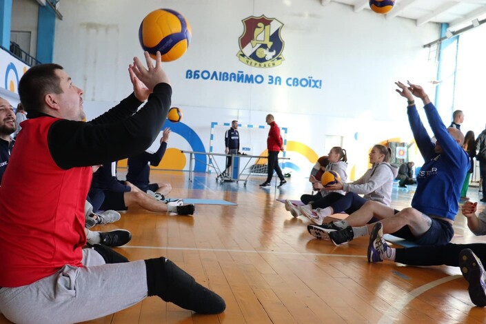

МСК «Дніпро» (Черкаси) запрошує на тренування з волейболу сидячи ветеранів російсько-української війни
Заняття проводить майстер спорту України з волейболу Вікторія Дєдкова (0631487552). Місце проведення: м.Черкаси, вул. Смілянська, 78 (СК «Сокіл»).
Тренування відбуваються в рамках проєкту «Центр розвитку спорту ветеранів війни та адаптивного спорту» в межах конкурсу соціальних ініціатив «Час діяти, Нестримні», за підтримки Благодійного Фонду «МХП -Громаді» та «Державної установи Всеукраїнський центр фізичного здоров’я «Спорт для всіх».